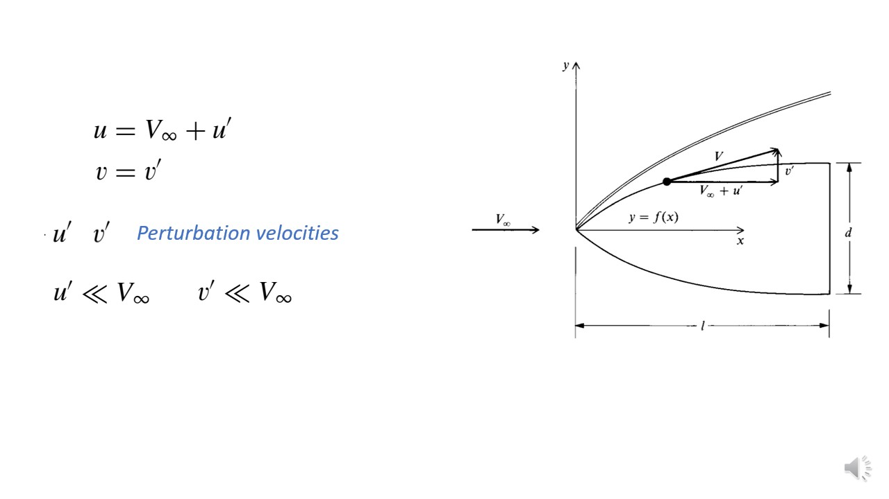
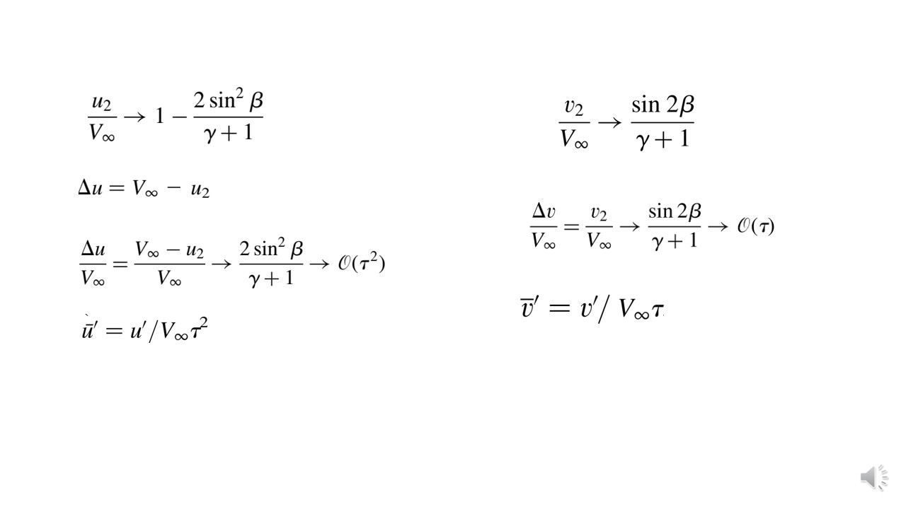
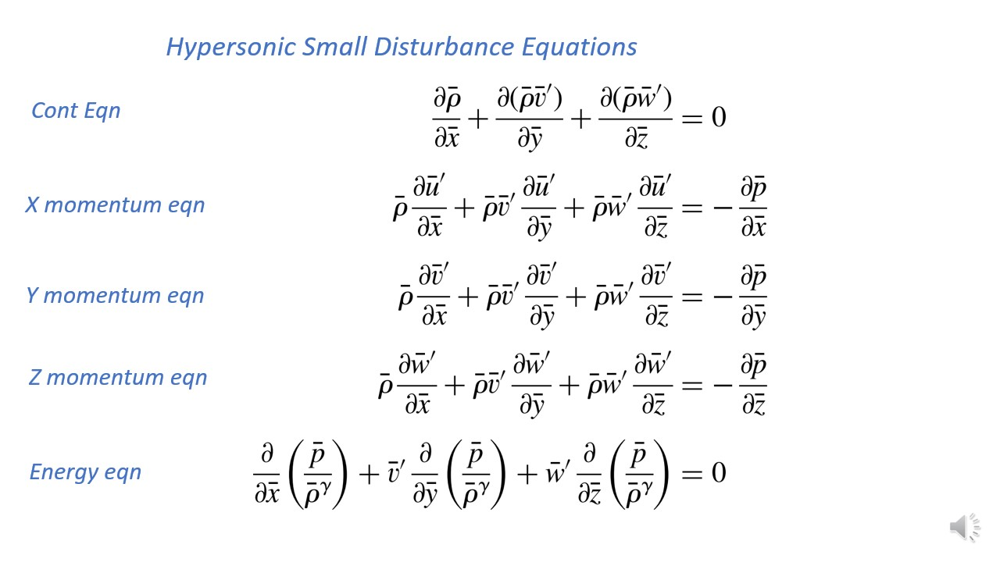

Lecture 6: Approximate Methods – Hypersonic Small Disturbance Equation
We have derived Euler equation and it could be appiled to any knid of body. But if we are interested in hypersonic body, whish is slender, and offers high lift ot drag ratio, then the derived euler equatio could be approximated to another form called Hypersonic Small Disturbance Eqaution
Slide 1

-
Consider a uniform hypoersonic flow over a two dimensional slender body. The velocity at any point could be decomposed into x and y velocity.
If we consider the free stream, the flow is parallel to x, anmd thus v_y = 0, and downstream it undergoes deflection and then u and v will be non zero.
Consider the x direction velocity to be equal to \(V_{infity}\ + U'), and y direction velocity be \(V').
-
Note that the velocity will be tangential to the syurfac esince the flow is invicid.
Here we have introduced new velocity variables and they are \(U'\) and \(V'\). These are called Pertubation Velocities.
Since we are considering the body to be slender, we are considering the pertubation velocities to be very small compared to free stream velocitites.
Silde 3

-
In order to study the nature of pertubation, let us consider velocity at some position the surface of body.
Since we already know from the boundary condition that the flow will be tangential to the surface of the body, we could write the second equation on the above slide.
-
Now from the geometry we could say that tangnet to any point on the srface will be proportianl to \(D/l\). And this is called Slenderness ratio.
Using these two ratios, we can write \(\frac{v'}{V_{infyt}+u'} = o(\tao) = \frac{dy}{dx}\).
And thne using the asusmption that the pertubation velocity is very small due to slender body assusmption, we could further modify the eqaution to \(\frac{v'}{V_{infyt}} = o(\tao) = \frac{dy}{dx}\)
-
Now let usa define \(a_{infty}\) to be free stream speed of sound. and using this ex[pression we cpould find as shown above.
Finally we have arrived at the final eqaution.
-
Now this term \(M_{infty}\tao\) is called Hypersonic Similarity Parameter. and this ratio that is \(\frac{v'}{a_{infty}}\) will give us the strenght of the distrubance that might be occuring inside the hypersonic flow.
Silde 5

-
We knwo that for slender bkody at hypersonic, the flow delfection angle an d shock wave angle will be
Therfore we can write the first line.
-
If we recall the pressure ratio for high mach number region, it is written as line 2. And it is derived from the oblique shock theory.
and from previous discussion we know the pressure ratio is of order pf magnitude given. And hence the non dimensioanmlise pressure (which as order of magnitude equal to one)
-
For the case of air, \(\gamma = 1.4\) which will already make the ratio of dnesity above at high mach number equal to one. And thus this is could be used as non dimensional density as it is.
Slide 6

-
The velocity ratio at high ,ach number is given by the first line.
Now let us define \(\deltau = V_{infty} - u_2\). And this is the change in x-velocity across shock wave.
Ratio \(\frac{\deltau}{V_{infty}}\) is given by the formual above. And using the first line we could simplfy it to this. and this is proportioanl to slenderness ratio squared.
So just non dimensionalising with \(V_{infty}\) wont do the job, we will also need to multiply the denomiantor by \(\tao^2\) and then the x velocity could be non-dimensionalised.
And similarly in y direction.
-
We see that that the velcoity change in x direction is much smaller than velocity change in y dircetion, and since the y direction velocity was zero intially, y direction velocity will almost always be close to zero.
This is beacuse for a slender body the slenderness ratio will be very small. So delta u is very small, and delta v is just small. And this means in hypersonic flows the flow is mostly domianted by x velocity.
Slide 7

Silde 8

Silde 9

-
Now we ahve finally arrived at the final governing eqaution exclusively for hypersonic flows, with slender body,a nd they are called small pertubation hypersonic euler equation.
These eqautions are only valid for slender bodies since we have ignored the term \(\tao^2\).
-
The pertubation velocity \(u') occurs only in the x momentum and it is decoupled from the eqaution. And so we will first solve the opther four eqautions, calculating p,v,w,rho, and then we will solve for u.
This again staes the fact that change in velocity in x is very small compared to that of y and z.
Even after applying the small pertubation we still got non linear eqaution. And this states the fact that hypersonic flows are indeed non linear.